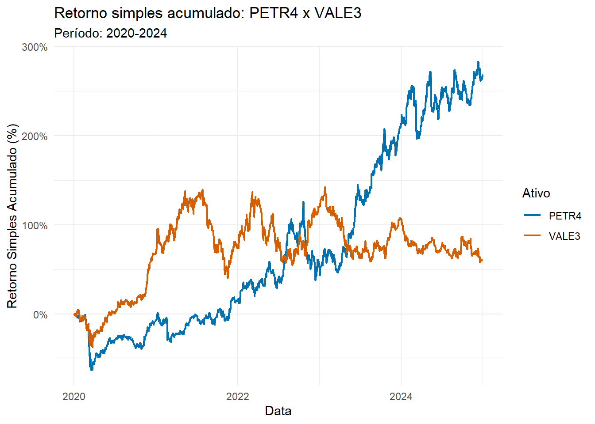
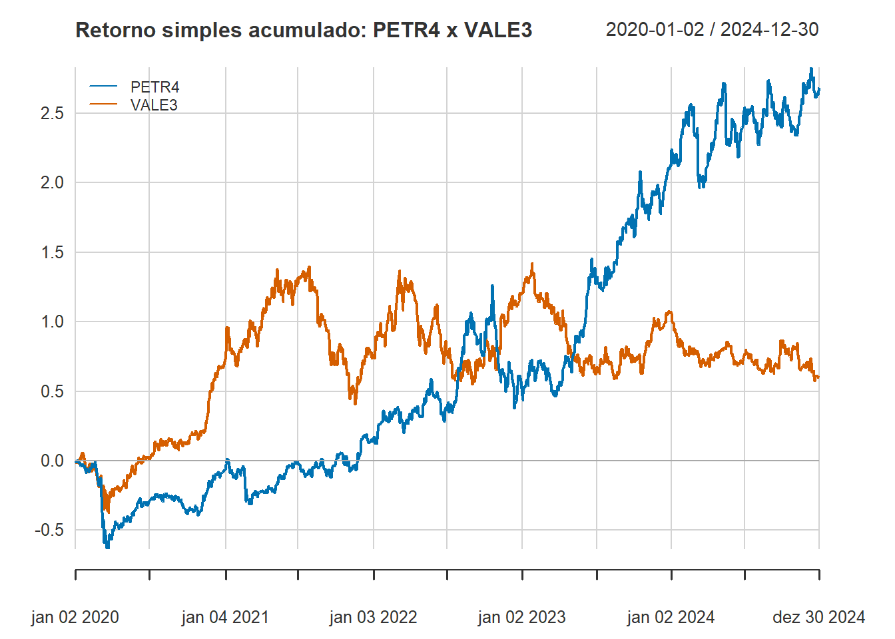

Código
# Instalação dos pacotes
# install.packages(c("quantmod", "PerformanceAnalytics"))
# Chamando os pacotes para utilizarmos na seção
library(quantmod)
library(PerformanceAnalytics)
library(tidyverse)Ivan Cunha Vieira
2 de março de 2026
Se você atua no mercado financeiro, com gestão de riscos, na área da economia ou de alguma forma trabalha com dados dessas áreas, provavelmente já se deparou com situações onde precisou lidar com dados de preços e volumes ao longo do tempo, com o objetivo de entender tendências, volatilidade e métricas desses dados. Nesses casos, a análise de séries temporais financeiras é a área estatística utilizada para resolver essas questões.
A grande particularidade desse tipo de dado é a sua natureza estocástica e a presença de não-estacionariedade. Um dado financeiro bruto (como o preço de fechamento) muitas vezes não segue uma distribuição normal, exigindo transformações, como a transformação logarítmica, amplamente usada na área da economia.
Para análises financeiras em R, ferramentas básicas como ts() permitem o tratamento de séries temporais. No entanto, expandimos essas possibilidades com os pacotes quantmod (Ryan e Ulrich 2025), focado na extração direta de fontes de dados (como Yahoo Finance), e PerformanceAnalytics (Peterson e Carl 2024), que abrange funções de análise técnica, como métricas específicas da área financeira.
Neste texto, abordaremos a extração de cotações, o cálculo de retornos, a visualização de desempenho e o cálculo de métricas de ativos brasileiros (PETR4 e VALE3). Além disso, faremos uma comparação entre as visualizações do pacote PerformanceAnalytics e do ecossistema tidyverse (Wickham et al. 2019), que permite uma manipulação e visualização dinâmica e elegante de dados, demonstrando como podemos utilizar o R para trabalharmos e apresentarmos com facilidade dados financeiros.
Para este exemplo, utilizaremos dados históricos diários de duas das maiores empresas da bolsa brasileira: Petrobras e Vale (que possuem os tickers PETR4.SA e VALE3.SA, respectivamente), compreendendo o período de 01/01/2020 a 31/12/2024. O que torna esse período particular e interessante é que ele engloba o período da pandemia e a posterior recuperação do mercado financeiro, permitindo visualizar eventos extremos dos dados econômicos.
A função getSymbols() do pacote quantmod é a ferramenta padrão para carregar dados diretamente de fontes públicas. Ela cria objetos do tipo xts (eXtensible Time Series), tipo de objetos lido pelas funções do pacote PerformanceAnalytics e que são matrizes indexadas por data. Esses objetos são criados automaticamente após o uso da função a partir do argumento auto.assign = TRUE.
[1] "PETR4.SA" "VALE3.SA"Ao inspecionar o objeto PETR4.SA, observamos a estrutura OHLCV (Open, High, Low, Close, Volume), uma estrutura de dados clássica usada em finanças para resumir a atividade do mercado por um determinado tempo, além do preço ajustado por dividendos e desdobramentos (Adjusted).
PETR4.SA.Open PETR4.SA.High PETR4.SA.Low PETR4.SA.Close
2020-01-02 30.51 30.70 30.31 30.70
2020-01-03 30.88 31.24 30.45 30.45
2020-01-06 30.43 30.94 29.95 30.81
PETR4.SA.Volume PETR4.SA.Adjusted
2020-01-02 37774500 8.816065
2020-01-03 71595600 8.744275
2020-01-06 81844000 8.847654É importante ressaltar que a coluna Adjusted é crucial para análises de longo prazo, pois nela é apresentado o desconto do pagamento de proventos, que no geral são remunerações ou benefícios distribuídos pelas empresas a seus investidores e/ou empregados, refletindo o retorno real do acionista.
Agora, podemos analisar as estatísticas dos dados de maneira simples com a função Ad do pacote quantmod, que extrai a coluna Adjusted de um objeto com estrutura OHLC, e a função table.Stats do pacote PerformanceAnalytics, que retorna uma tabela básica de estatísticas dos dados.
PETR4 VALE3
Observations 1244.0000 1244.0000
NAs 0.0000 0.0000
Minimum 3.2421 18.9173
Quartile 1 8.0994 49.3487
Median 12.9243 52.9913
Arithmetic Mean 15.6135 51.6738
Geometric Mean 13.3255 50.0968
Quartile 3 24.1016 59.1318
Maximum 33.7639 73.0253
SE Mean 0.2553 0.3322
LCL Mean (0.95) 15.1127 51.0221
UCL Mean (0.95) 16.1144 52.3255
Variance 81.0819 137.2553
Stdev 9.0046 11.7156
Skewness 0.6224 -0.7765
Kurtosis -1.0673 0.1127Podemos observar que, para ambos os ativos, há um total de 1244 observações Entre esses dados, percebemos que os preços das ações da Petrobras apresentaram valores mais baixos em todos os seus quantis quando em comparação com os preços da Vale. Além disso, observando as médias aritméticas e geométricas de ambos os ativos, é possível reparar que elas apresentam uma boa proximidade, indicando que os dados podem não apresentar valores outliers ou podem possuir baixa variabilidade, ideia essa que é corroborada pelos seus respectivos valores de desvio padrão aparentemente pequenos. Fora essas informações, a tabela também traz estatísticas de curtose e assimetria, importantes para análises de distribuições.
Enquanto os preços nos mostram o nível do ativo, para a modelagem estatística utilizamos os retornos. De acordo com Tsay (2010), os retornos simples (\(R_t\)) são dados pela equação
\[R_t=\dfrac{P_t-P_{t-1}}{P_{t-1}},\]
onde \(P_t\) é o preço no tempo t e \(P_{t-1}\) é o preço no tempo t-1. Sua forma acumulada por k períodos é dada pela equação \[\Pi_{j=0}^{k-1}(1+R_{t-j}).\]
No R, podemos calcular isso facilmente e converter o formato xts para tibble, facilitando a visualização com ggplot2. Para isso, basta, primeiramente, juntarmos as informações
# Transformação para formato tibble
dados_tibble <- precos %>%
fortify.zoo() %>%
as_tibble() %>%
rename(Data = Index) %>%
pivot_longer(cols = -Data, names_to = "Ativo", values_to = "Preco") %>%
group_by(Ativo) %>%
# Cálculo de retornos simples e acumulados
mutate(Retorno_Diario = replace_na((Preco-lag(Preco))/lag(Preco),0),
Retorno_Acumulado = cumprod(1 + Retorno_Diario) - 1)
head(dados_tibble)# A tibble: 6 × 5
# Groups: Ativo [2]
Data Ativo Preco Retorno_Diario Retorno_Acumulado
<date> <chr> <dbl> <dbl> <dbl>
1 2020-01-02 PETR4 8.82 0 0
2 2020-01-02 VALE3 30.1 0 0
3 2020-01-03 PETR4 8.74 -0.00814 -0.00814
4 2020-01-03 VALE3 29.9 -0.00736 -0.00736
5 2020-01-06 PETR4 8.85 0.0118 0.00358
6 2020-01-06 VALE3 29.7 -0.00593 -0.0133 No entanto, também podemos calcular os retornos simples e acumulados a partir da função Return.calculate do pacote PerfomanceAnalytics, encontrando um resultado igual ao do cálculo feito anteriormente. Dessa forma, otimizamos o código ao evitar o processo de adicionar a fórmula ao mesmo.
A função Return.calculate permite o cálculo de diferentes tipos de retorno, como o retorno simples e o retorno logarítmico (utilizando os argumentos “discrete” e “log”, respectivamente), abrangendo abordagens diversas para a análise de dados financeiros.
A principal vantagem ao fazer uso dessa função é que não transformarmos os dados de xts para tibble, permitindo com que nós continuemos a trabalhar com eles diretamente no formato extraído e aplicando as funções especializadas da área para esses tipos de dados.
PETR4 VALE3
2020-01-02 0.000000000 0.0000000000
2020-01-03 -0.008143060 -0.0073622377
2020-01-06 0.011822507 -0.0059338435
2020-01-07 -0.003895041 0.0072748744
2020-01-08 -0.006190794 0.0001849595
2020-01-09 -0.003278387 -0.0131456716 PETR4 VALE3
2020-01-02 0.0000000000 0.000000000
2020-01-03 -0.0081430596 -0.007362238
2020-01-06 0.0035831756 -0.013252395
2020-01-07 -0.0003258219 -0.006073930
2020-01-08 -0.0065145991 -0.005890094
2020-01-09 -0.0097716283 -0.018958336Outra função interessante para análise dos retornos é a função Return.cumulative, que entrega o retorno acumulado final dos ativos no período analisado. O retorno acumulado final pode ser comparado aos gráficos gerados mais a frente no texto.
A visualização da evolução do retorno simples acumulado permite comparar o desempenho relativo dos ativos, normalizando o ponto de partida. Para isso, podemos utilizar o ggplot, função do ecossistema tidyverse para visualização gráfica, para os dados salvos no formato tibble.
# Gráfico de retornos acumulados
ggplot(dados_tibble,
aes(x = Data, y = Retorno_Acumulado, color = Ativo)) +
geom_line(linewidth = 0.8) +
scale_y_continuous(labels = scales::percent) +
labs(title = "Retorno simples acumulado: PETR4 x VALE3",
subtitle = "Período: 2020-2024",
y = "Retorno Simples Acumulado (%)", x = "Data") +
theme_minimal() +
scale_color_manual(values = c("#0072B2", "#D55E00"))
Pelas curvas dos retornos simples acumulados de ambas as empresas, podemos notar uma queda abrupta entre o começo e o meio de 2020 (início da pandemia) e a subsequente recuperação por parte das duas empresas, com a Vale demonstrando uma alta mais acentuada em 2021 (ainda durante a pandemia) e se estabilizando até o final de 2024, enquanto a Petrobras demonstrou uma recuperação mais lenta, porém constante, e em 2023 apresentou um crescimento que se estendeu pelo menos até a última data analisada (final de 2024).
Em comparação ao realizado pelo tidyverse, podemos então gerar um gráfico para a visualização dos retornos por meio de funções próprias do pacote PerformanceAnalytics, como a função chart.CumReturns.

Podemos perceber que o gráfico gerado possui a mesma dinâmica, alterando apenas algumas formatações do layout do gráfico quando comparado ao feito pelo tidyverse. Além disso, a eficiência da função chart.CumReturns se mostrou muito maior, uma vez que precisou de menos linhas de código para gerar o mesmo gráfico.
Observando os gráficos acima, percebemos que os retornos variam constantemente em ambos os ativos. Com o pacote PerformanceAnalytics, é possível analisar a frequência dessas movimentações, utilizando a função DownsideFrequency (ou UpsideFrequency, que é complementar à função anterior).
PETR4 VALE3
Downside Frequency (MAR = 0%) 0.4710611 0.5088424Ao usarmos o retorno mínimo aceitável (\(MAR = 0%\)) como parâmetro de comparação, percebemos que, entre as duas empresas, os retornos da Petrobras se mantiveram abaixo da margem de 0% por menos tempo em toda a série (aproximadamente 47% do tempo), enquanto os da Vale se mantiveram abaixo por praticamente metade do tempo analisado (aproximadamente 50% do tempo), indicando uma melhor constância no aumento dos retornos da Petrobras, algo que foi possível observar anteriormente através dos gráficos.
Uma métrica fundamental para gestão de risco é o Maximum Drawdown (Queda Máxima). Essa métrica mede a maior queda percentual de um pico até um fundo antes que um novo pico seja atingido.
Utilizando a função maxDradown do pacote PerformanceAnalytics, podemos extrair essa métrica facilmente.
PETR4 VALE3
Worst Drawdown 0.6335604 0.4134301O resultado indica que, no pior momento do período analisado, um investidor da Petrobras chegou a ver seu capital reduzir-se em aproximadamente 63,3% em relação ao topo anterior, enquanto um investidor da Vale teve seu capital reduzido em aproximadamente 41,34% no maior ponto de queda.
Para sabermos exatamente em qual período essa queda aconteceu e podermos associá-la a eventos macroeconômicos, além de entendermos quanto tempo aquele ativo demorou a se recuperar da queda, é necessário compreendermos as datas exatas em que ocorreram cada um desses processos. Para isso, basta utilizarmos a função table.Drawdowns, que apresenta em sua estrutura:
From Trough To Depth Length To Trough Recovery
1 2020-01-07 2020-03-18 2021-01-07 -0.6336 249 50 199 From Trough To Depth Length To Trough Recovery
1 2021-07-29 2021-11-18 2023-01-26 -0.4134 375 77 298Ao analisar o comportamento histórico apresentado na tabela, observamos que o pior cenário para a Petrobras ocorreu de fato no início de 2020, coincidindo com o choque do mercado no início da pandemia observado graficamente. O ativo levou apenas 50 dias para atingir sua queda máxima de 63,36%, mas necessitou de quase 200 dias adicionais para se recuperar dessa queda.
Já a Vale apresentou sua maior queda em um período diferente, iniciando em julho de 2021. Embora a profundidade tenha sido menor (41,34%), o ciclo de queda e recuperação foi significativamente mais longo, totalizando 375 dias entre o topo anterior e o retorno ao mesmo nível de preço.
Para complementar as análises feitas pelos dados das tabelas, podemos utilizar as funções AverageDrawdown, AverageLength e AverageRecovery para obtermos as quedas médias e o tempo médio de recuperação
# Médias de queda e recuperação
drawdown_stats <- data.frame(
Métrica = c("Profundidade média de queda", "Tempo médio de queda", "Tempo médio de recuperação"),
PETR4 = c(AverageDrawdown(retornos_simples$PETR4), AverageLength(retornos_simples$PETR4), AverageRecovery(retornos_simples$PETR4)),
VALE3 = c(AverageDrawdown(retornos_simples$VALE3), AverageLength(retornos_simples$VALE3), AverageRecovery(retornos_simples$VALE3))
)
print(drawdown_stats) Métrica PETR4 VALE3
1 Profundidade média de queda 0.07124564 0.07575652
2 Tempo médio de queda 24.26530612 46.88461538
3 Tempo médio de recuperação 15.59183673 19.61538462Por fim, ao analisarmos as métricas de desempenho médio, nota-se que ambos os ativos possuem uma profundidade média de queda bastante próxima, situada entre 7,1% e 7,5%. No entanto, a dinâmica de tempo mostra que a Vale tende a ser mais persistente em seus movimentos de desvalorização, levando em média aproximadamente 46 dias para atingir o fundo da queda, quase o dobro do tempo observado para a Petrobras, que é de 24,2 dias. Essa característica se estende ao período de recuperação, no qual a Vale também demonstra maior lentidão, com um tempo médio de recuperação de 19,6 dias contra 15,5 dias da Petrobras, sugerindo que, embora a Petrobras sofra quedas mais abruptas em momentos de crise, ela historicamente demonstra uma capacidade de reação mais ágil do que a Vale.
Este tutorial demonstrou como o R não apresenta dificuldades para o trabalho com dados financeiros, possuindo funções que fazem desde a busca automática de informações de ativos até a criação de métricas que ajudam a entender os riscos de um investimento, com implementações diretas para visualização dos gráficos.
Sobre a comparação da Petrobras com a Vale, exemplo utilizado para explorarmos as ferramentas dos pacotes apresentados, vimos que as análises dos retornos e de métricas como o drawdown são fundamentais para uma visão real de lucro e segurança. Percebemos que, embora a Petrobras tenha enfrentado uma queda muito mais forte durante a pandemia, ela mostrou uma capacidade de se recuperar e crescer com mais agilidade do que a Vale nos anos seguintes. Por outro lado, a Vale apresentou quedas menos profundas, mas que duraram muito mais tempo para serem superadas, o que exige mais paciência do investidor.
Todas essas análises puderam ser realizadas através do uso dos pacotes quantmod e PerformanceAnalytics, que permitem que qualquer pessoa transforme dados financeiros brutos em análises visuais e estatísticas.